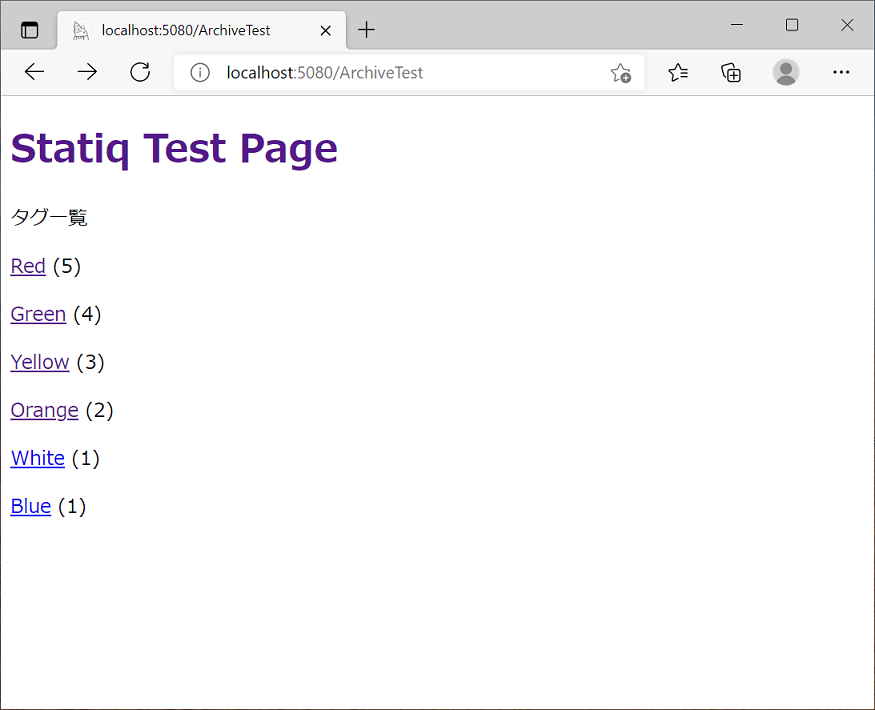
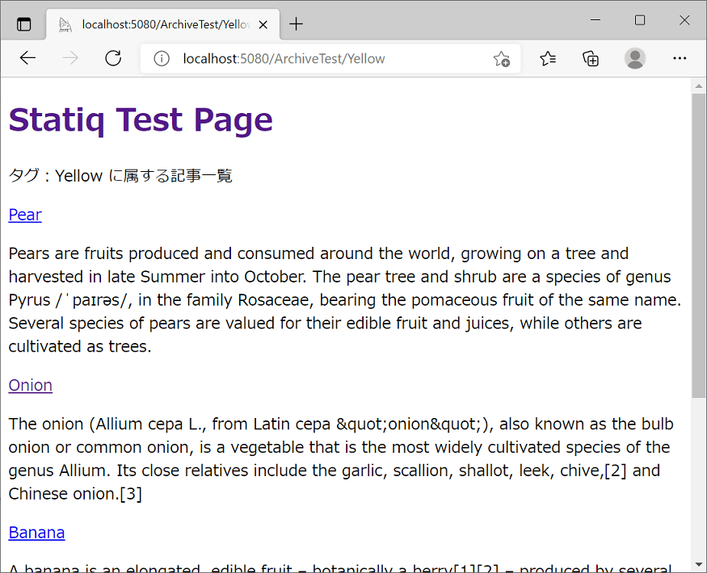
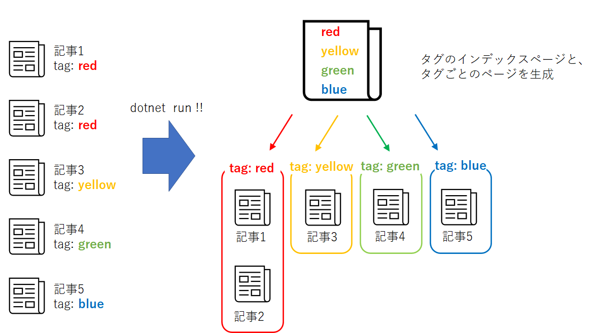

2022/2/16
この度、ソフトウェアの勉強のためにブログを作りました。
エンジニアがブログを作ると、以下のようなメリットがあるらしいです。
ただ、ブログを作ろう！といっても、やり方がいろいろあると思います。
まずはブログを作る方法を考えてみます。
調べたところ、3通りあります。
それぞれメリット・デメリットあります。
私の場合は、「無料であること」、「HTMLの勉強も兼ねたいこと」の2点から、静的サイトのブログを作成することにしました。
静的サイトジェネレータは、C#を少しだけかじっていましたので、C#製の静的サイトジェネレータであるStatiqを使うことにします。
また、ホスティングサービスは無料で使えて広告も貼れるGithub Pagesを使用します。
といことで、この記事では、「Statiqという静的サイトジェネレータ」＋「github pages」の組み合わせでブログを作っていこうと思います。
Statiqはマイナーなのかネットに情報があまりないようです。
とりあえず、簡単な紹介と導入方法をQiitaに投稿してみました。
Statiqのブログテーマを適用してブログを書く方法です。
qiita C#製の静的サイトジェネレータ「Statiq」でブログを書く
この記事では、サイトにオリジナリティを出すために、ブログテーマを使わないで独自のサイトの作成にチャレンジしていきます。
Statiqでは、layoutと記事でファイルが別となります。
layoutファイルを一つ作って、複数の記事へ適用することができます。
layoutはRazor構文で作成します。
Razor構文とは、HTML上にC#を埋め込んで実行するプログラミング構文です。
layoutとして作成したファイルは、ファイル名の先頭にアンダーバー(_)をつけます。
これをつけることで、記事として認識されなくなります。
例）_layout.cshtml
記事へのlayoutの適用は、Metadata上で設定します。
Metadataの設定方法はたくさんあるのですが、以下の3つのうち、どれかで行えば十分かと思います。
詳細は以下を参照ください。
layoutファイル内で「@RenderBody()」と記述すると、その部分に記事が呼び出されます。
Archive機能は、Statiqでブログを作るうえで重要な機能です。
一言でいうと
「記事をタグで整理して、インデックスを作ってくれる」
機能です。
cshmtlファイルのFront Matterに、”ArchiveSources”で記事を保存しているフォルダを指定し、”ArchiveKey”でタグを設定すると、指定したフォルダ内の記事をタグでまとめて以下のHTMLを出力してくれます。
出力HTML例
 ファイルの例
ArchiveSources: posts/*
ArchiveKey: Colors
---
@if (Document.ContainsKey(Keys.GroupKey))
{
<!-- Render a group page -->
@foreach (IDocument document in Document.GetChildren())
{
<p>@Html.DocumentLink(document)</p>
@Html.Raw(document.GetString(Keys.Excerpt))
}
}
else
{
<!-- Render an index page -->
@foreach (IDocument document in Document.GetChildren())
{
<p>@Html.DocumentLink(document)</p>
}
}
↓↓図解するとこのようなイメージです。
この機能を利用することで、ブログのタグ構造をつくることができます。
上記のファイル例で、インデックスを作成するのに以下のコードを記述しています。
@foreach (IDocument document in Document.GetChildren())
{
}
@Document.GetChildren で、ツリー構造の配下の記事を取得できます。
それをforeachでひとつづつ取り出して処理しています。
Razor構文内で@Documentを使用することで、記事のMetaDataへアクセスすることができます。
例えば以下のような感じです。
layoutファイルを多数の記事に適用するときに、記事ごとに表示を変えたいときなどに使用します。
例えば、タイトルは以下のようにすると、記事ごとのMetaDataにあるTitleを表示できます。
<title>@Document.GetString("Title") </title>
以上の情報を使って、ものすごいザックリなサンプルを作ってみました。
記事はStatiqの 公式example から拝借しました。
ちなみに、本サイトもStatiqで作成しています。
静的サイトジェネレータは、以前はPhtyon製のPelicanというものを使っていましたが、Statiqの方がページの自由度が高く使いやすいと感じています。
Statiq、お勧めですので是非使ってみてください。
Statiqでブログを作って公開してから半年になりますが、感じたことは
というような感じで、勉強にはなるかなと思っています。
また、静的サイトジェネレータは一度環境を作ってしまえば、あとはMarkDownで記事を書くだけで公開していけるのでお手軽です。
ということで、気長にブログを続けていけたらいいなと思います。
以上です。